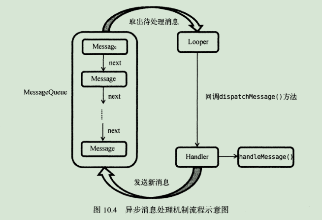

探究服务 什么是服务 服务是Android中实现后台运行的解决方案。
服务并不是运行在一个独立的进程中，而是依赖于创建服务时所在的应用程序进程。当某个应用程序进程被杀掉时，所有依赖于该进程的服务也会停止运行。
另外，服务并不会自动开启线程，所有的代码都是默认运行在主线程当中的。
Android多线程编程 线程的基本用法 Android的多线程编程与java多线程编程的语法基本相同：
1 2 3 4 5 6 class MyThread extends Thread @Override public void run () } } new myThread().start();
另外还可以选择Runnable接口的方式来定义线程：
1 2 3 4 5 6 7 class MyThread implements Runnable @Override public void run () } } MyThread myThread = new MyThread(); new Thread(myThread).start();
当然，也可以使用匿名类的方式：
1 2 3 4 5 new Thread(new Runnable(){ @Override public void run () } }).start();
在子线程中更新UI 新建AndroidThreadTest项目，修改布局文件：
1 2 3 4 5 6 7 8 9 10 11 12 13 14 15 16 17 18 19 <?xml version="1.0" encoding="utf-8"?> <RelativeLayout xmlns:android ="http://schemas.android.com/apk/res/android" android:orientation ="vertical" android:layout_width ="match_parent" android:layout_height ="match_parent" > <Button android:id ="@+id/change_text" android:layout_width ="match_parent" android:layout_height ="wrap_content" android:text ="Change Text" /> <TextView android:id ="@+id/text" android:layout_width ="match_parent" android:layout_height ="wrap_content" android:layout_centerInParent ="true" android:text ="Hello world" android:textSize ="20sp" /> </RelativeLayout >
接下来修改代码如下：
1 2 3 4 5 6 7 8 9 10 11 12 13 14 15 16 17 18 19 20 21 22 23 24 25 26 27 28 29 30 31 32 33 34 35 36 37 38 39 40 41 42 public class MainActivity extends AppCompatActivity implements View .OnClickListener public static final int UPDATE_TEXT = 1 ; private TextView text; private Handler handler = new Handler(new Handler.Callback(){ public boolean handleMessage (Message msg) switch (msg.what) { case UPDATE_TEXT: text.setText("Nice to meet you" ); break ; default : break ; } return true ; } }); @Override protected void onCreate (Bundle savedInstanceState) super .onCreate(savedInstanceState); setContentView(R.layout.activity_main); text = (TextView) findViewById(R.id.text); Button changeText = (Button) findViewById(R.id.change_text); changeText.setOnClickListener(this ); } @Override public void onClick (View v) switch (v.getId()){ case R.id.change_text: new Thread(new Runnable() { @Override public void run () Message message = new Message(); message.what = UPDATE_TEXT; handler.sendMessage(message); } }).start(); break ; default : break ; } } }
按下按钮后，子线程创建了一个Message对象，赋值后调用Handler的sendMessage()方法将其发出去。然后Handler收到这条Message并在handleMessage()方法中进行处理。
解析异步消息处理机制 Android的异步消息处理主要由4个部分组成：Message、Handle、MessageQueue、Looper。
Message 用于在线程之间传递消息，可以在内部携带少量的信息，用于在不同线程之间交换数据。除了what字段，还有两个整型字段arg1和arg2，以及一个Object对象字段obj。
Handle 主要用于发送和处理消息。发送消息的一般是Handler的sendMessage()方法，而发出的消息经过一系列辗转处理后，最终会传递到Handler的handleMessage()方法中。
MessageQueue 消息队列，主要用于存放所有通过Handler发送的消息，这部分消息会一直存在于消息队列中，等待被处理。每个线程中只会有一个MessageQueue对象。
Looper 每个线程中的MessageQueue管家，调用Looper的lopp()方法后，就会进入无限循环中，每当发现MessageQueue中存在一条消息，就会将它取出，并传递到Handler的handleMessage()方法中。每个线程也只会有一个Looper对象。

之前使用到的runOnUiThread()方法其实就是一个异步消息处理机制的接口封装。
使用AsyncTask AsyncTask是一个抽象类。在继承时可以指定3个泛型参数，其用途如下：
Params: 在执行AsyncTask时需要传入的参数，可用于在后台任务中使用。
Progress：后头任务执行时，如果需要在界面上显示当前进度，则使用这里指定的泛型作为进度单位。
Result：当任务执行完毕后，如果需要对结果进行返回，则使用这里指定的泛型作为返回值类型。
AsyncTask一般来说需要重写的方法用以下几个：
onPreExecute():这个方法会在后台任务开始执行之前调用，用于进行界面的初始化。
doInBackground(Params…)：这个方法中的所有代码都会在子线程中运行。如果需要更新UI元素，可以调用publishProgress(Progress…)方法来完成。
onProgressUpdate(Progress…)：在后台任务中调用了publishProgress(Progress…)方法后，onProgressUpdate(Progress…)方法很快就会被调用，在这个方法中可以对UI进行操作。
onPostExecute(Result)：当后台任务执行完毕并通过return语句进行返回时，这个方法就很快会被调用。
假设定义了一个DownloadTask类继承自AsyncTask，那么完成构造后只需以下代码即可启动：
1 new DownloadTask().execute();
服务的基本用法 定义一个服务 新建一个ServiceTest项目，然后右键点击com.example.servicetest->New->Service->Service，将服务命名为MyService。修改MyService代码如下：
1 2 3 4 5 6 7 8 9 10 11 12 13 14 15 16 17 18 19 20 21 22 public class MyService extends Service public MyService () } @Override public IBinder onBind (Intent intent) throw new UnsupportedOperationException("Not yet implemented" ); } @Override public void onCreate () super .onCreate(); } @Override public int onStartCommand (Intent intent, int flags, int startId) return super .onStartCommand(intent, flags, startId); } @Override public void onDestroy () super .onDestroy(); } }
其中onCrete()方法会在服务创建的时候调用，onStartCommand()方法会在每次服务启动的时候调用，onDestroy()方法会在服务销毁的时候调用。
启动和停止服务 修改布局文件：
1 2 3 4 5 6 7 8 9 10 11 12 13 14 15 16 17 18 <?xml version="1.0" encoding="utf-8"?> <LinearLayout xmlns:android ="http://schemas.android.com/apk/res/android" android:orientation ="vertical" android:layout_width ="match_parent" android:layout_height ="match_parent" > <Button android:id ="@+id/start_service" android:layout_width ="match_parent" android:layout_height ="wrap_content" android:text ="Start Service" /> <Button android:id ="@+id/stop_service" android:layout_width ="match_parent" android:layout_height ="wrap_content" android:text ="Stop Service" /> </LinearLayout >
然后修改MainActivity代码：
1 2 3 4 5 6 7 8 9 10 11 12 13 14 15 16 17 18 19 20 21 22 23 24 25 26 27 public class MainActivity extends AppCompatActivity implements View .OnClickListener @Override protected void onCreate (Bundle savedInstanceState) super .onCreate(savedInstanceState); setContentView(R.layout.activity_main); Button startService = (Button) findViewById(R.id.start_service); startService.setOnClickListener(this ); Button stopService = (Button) findViewById(R.id.stop_service); stopService.setOnClickListener(this ); } @Override public void onClick (View v) switch (v.getId()){ case R.id.start_service: Intent startIntent = new Intent(this , MyService.class ) ; startService(startIntent); break ; case R.id.stop_service: Intent stopIntent = new Intent(this , MyService.class ) ; stopService(stopIntent); break ; default : break ; } } }
并且在服务中添加打印日志：
1 2 3 4 5 6 7 8 9 10 11 12 13 14 15 16 17 18 19 20 21 22 23 24 25 public class MyService extends Service public MyService () } @Override public IBinder onBind (Intent intent) throw new UnsupportedOperationException("Not yet implemented" ); } @Override public void onCreate () Log.d("Myservice" ,"onCreate execute" ); super .onCreate(); } @Override public int onStartCommand (Intent intent, int flags, int startId) Log.d("Myservice" ,"onStartCommand execute" ); return super .onStartCommand(intent, flags, startId); } @Override public void onDestroy () Log.d("Myservice" ,"onDestroy execute" ); super .onDestroy(); } }
编译运行后，点击Start Service，可以发现onCreate和onStartCommand()方法都执行了，并且还可以在Setting->Developer options->Running services中找到它。然后点击Stop Service服务就会停止了。
另外，onCreate()方法是服务第一次创建时调用的，而onStartCommand()方法则在每次服务启动的时候都会调用。
活动和服务进行通信 修改Myservice代码如下：
1 2 3 4 5 6 7 8 9 10 11 12 13 14 15 16 17 18 19 20 21 22 23 24 25 26 27 28 29 30 31 32 33 34 35 36 37 public class MyService extends Service private DownloadBinder mBinder = new DownloadBinder(); class DownloadBinder extends Binder public void startDownload () Log.d("Myservice" ,"startDownload execute" ); } public int getProgress () Log.d("Myservice" ,"getProgress execute" ); return 0 ; } } public MyService () } @Override public IBinder onBind (Intent intent) return mBinder; } @Override public void onCreate () Log.d("Myservice" ,"onCreate execute" ); super .onCreate(); } @Override public int onStartCommand (Intent intent, int flags, int startId) Log.d("Myservice" ,"onStartCommand execute" ); return super .onStartCommand(intent, flags, startId); } @Override public void onDestroy () Log.d("Myservice" ,"onDestroy execute" ); super .onDestroy(); } }
修改布局文件：
1 2 3 4 5 6 7 8 9 10 11 12 13 14 15 16 17 18 19 20 21 22 23 24 25 26 27 28 29 30 <?xml version="1.0" encoding="utf-8"?> <LinearLayout xmlns:android ="http://schemas.android.com/apk/res/android" android:orientation ="vertical" android:layout_width ="match_parent" android:layout_height ="match_parent" > <Button android:id ="@+id/start_service" android:layout_width ="match_parent" android:layout_height ="wrap_content" android:text ="Start Service" /> <Button android:id ="@+id/stop_service" android:layout_width ="match_parent" android:layout_height ="wrap_content" android:text ="Stop Service" /> <Button android:id ="@+id/bind_service" android:layout_width ="match_parent" android:layout_height ="wrap_content" android:text ="Bind Service" /> <Button android:id ="@+id/unbind_service" android:layout_width ="match_parent" android:layout_height ="wrap_content" android:text ="Unbind Service" /> </LinearLayout >
然后修改MainActivity代码：
1 2 3 4 5 6 7 8 9 10 11 12 13 14 15 16 17 18 19 20 21 22 23 24 25 26 27 28 29 30 31 32 33 34 35 36 37 38 39 40 41 42 43 44 45 46 47 48 49 50 51 public class MainActivity extends AppCompatActivity implements View .OnClickListener private MyService.DownloadBinder downloadBinder; private ServiceConnection connection = new ServiceConnection() { @Override public void onServiceConnected (ComponentName name, IBinder service) downloadBinder = (MyService.DownloadBinder) service; downloadBinder.startDownload(); downloadBinder.getProgress(); } @Override public void onServiceDisconnected (ComponentName name) } }; @Override protected void onCreate (Bundle savedInstanceState) super .onCreate(savedInstanceState); setContentView(R.layout.activity_main); Button startService = (Button) findViewById(R.id.start_service); startService.setOnClickListener(this ); Button stopService = (Button) findViewById(R.id.stop_service); stopService.setOnClickListener(this ); Button bindService = (Button) findViewById(R.id.bind_service); bindService.setOnClickListener(this ); Button unbindService = (Button) findViewById(R.id.unbind_service); unbindService.setOnClickListener(this ); } @Override public void onClick (View v) switch (v.getId()){ case R.id.start_service: Intent startIntent = new Intent(this , MyService.class ) ; startService(startIntent); break ; case R.id.stop_service: Intent stopIntent = new Intent(this , MyService.class ) ; stopService(stopIntent); break ; case R.id.bind_service: Intent bindIntent = new Intent(this , MyService.class ) ; bindService(bindIntent, connection, BIND_AUTO_CREATE); break ; case R.id.unbind_service: unbindService(connection); break ; default : break ; } } }
其中，onServiceConnected()方法会在活动与服务绑定成功时调用，onServiceDisconnected()方法会在活动与服务解绑时调用。
bindService()方法将MainActivity进行绑定，其中第一个参数是Intent对象，第二个参数是前面的 ServiceConnection实例，第三个是参数为，BIND_AUTO_CREATE表示活动和服务进行绑定后自动创建服务，这会使得MyService中的onCreate()方法得到执行，但onStartCommand()方法不会执行。
注意的是任何一个服务在整个应用程序范围内都是通用的，即Myservice可以喝任何一个活动绑定，而且在绑定完成后他们都可以获取到相同的DownloadBinder实例。
服务的生命周期 一旦在项目中任何位置调用了Context的startService()方法，相应的服务就会启动，并回调onStartCommand()方法。如果服务还未被创建过，onCreate()方法会先于onStartCommand()方法执行。服务启动后会一直保持运行状态，直到stopService()或stopSelf()方法被调用。另外虽然每调用一次startService()方法，onStartCommand()就会执行一次，但实际上每个服务都只会存在一个实例。所以只需要调用一次stopService()或stopSelf()方法，服务就会停止。
根据Android系统的机制，一个服务只要被启动或被绑定之后，就会一直处于运行状态，必须要让以上两种条件同时不满足，服务才能被销毁。
服务的更多技巧 使用前台服务 前台服务可以避免因系统出现内存不足的情况时被回收的情况发生。前台服务会一直又一个正在运行的图标在系统状态栏显示。
修改Myservice：
1 2 3 4 5 6 7 8 9 10 11 12 13 14 15 16 17 18 19 20 21 22 23 24 25 26 27 28 29 30 31 32 33 34 35 36 37 38 39 40 41 42 43 44 45 46 47 48 public class MyService extends Service private DownloadBinder mBinder = new DownloadBinder(); class DownloadBinder extends Binder public void startDownload () Log.d("Myservice" ,"startDownload execute" ); } public int getProgress () Log.d("Myservice" ,"getProgress execute" ); return 0 ; } } public MyService () } @Override public IBinder onBind (Intent intent) return mBinder; } @Override public void onCreate () super .onCreate(); Log.d("Myservice" ,"onCreate execute" ); Intent intent = new Intent(this , MainActivity.class ) ; PendingIntent pi = PendingIntent.getActivity(this , 0 , intent, 0 ); Notification notification = new NotificationCompat.Builder(this ,"default" ) .setContentTitle("Myservice" ) .setContentText("This is Myservice" ) .setWhen(System.currentTimeMillis()) .setSmallIcon(R.mipmap.ic_launcher) .setLargeIcon(BitmapFactory.decodeResource(getResources(), R.mipmap.ic_launcher)) .setContentIntent(pi) .build(); startForeground(1 , notification); } @Override public int onStartCommand (Intent intent, int flags, int startId) Log.d("Myservice" ,"onStartCommand execute" ); return super .onStartCommand(intent, flags, startId); } @Override public void onDestroy () Log.d("Myservice" ,"onDestroy execute" ); super .onDestroy(); } }
在其中添加了通知的内容，并且调用startForeground()方法将其显示出来。
使用IntentService 服务中的代码都是默认运行在主线程中的，可以使用多线程技术，让服务避免ANR的情况：
1 2 3 4 5 6 7 8 9 10 11 12 @Override public int onStartCommand (Intent intent, int flags, int startId) Log.d("Myservice" ,"onStartCommand execute" ); new Thread(new Runnable() { @Override public void run () stopSelf(); } }).start(); return super .onStartCommand(intent, flags, startId); }
这里调用stopSelf()可以让服务在执行完毕后自动停止。
而IntentService可以完成创建新线程和自动停止的功能。
新建MyIntentService类继承自IntentService，修改代码：
1 2 3 4 5 6 7 8 9 10 11 12 13 14 15 public class MyIntentService extends IntentService public MyIntentService () super ("MyIntentService" ); } @Override protected void onHandleIntent (Intent intent) Log.d("MyIntentService" , "Thread id is " + Thread.currentThread().getId()); } @Override public void onDestroy () super .onDestroy(); Log.d("MyIntentService" , "onDestroy executed" ); } }
添加布局：
1 2 3 4 5 6 <Button android:id ="@+id/start_intent_service" android:layout_width ="match_parent" android:layout_height ="wrap_content" android:text ="Start IntentService" />
然后修改MainActivity代码：
1 2 3 4 5 6 7 8 9 10 11 12 13 14 15 16 17 18 19 20 21 22 23 24 25 26 27 28 29 30 31 32 33 34 35 36 37 38 39 40 41 42 43 44 45 46 47 48 49 50 51 52 53 54 55 56 57 58 public class MainActivity extends AppCompatActivity implements View .OnClickListener private MyService.DownloadBinder downloadBinder; private ServiceConnection connection = new ServiceConnection() { @Override public void onServiceConnected (ComponentName name, IBinder service) downloadBinder = (MyService.DownloadBinder) service; downloadBinder.startDownload(); downloadBinder.getProgress(); } @Override public void onServiceDisconnected (ComponentName name) } }; @Override protected void onCreate (Bundle savedInstanceState) super .onCreate(savedInstanceState); setContentView(R.layout.activity_main); Button startService = (Button) findViewById(R.id.start_service); startService.setOnClickListener(this ); Button stopService = (Button) findViewById(R.id.stop_service); stopService.setOnClickListener(this ); Button bindService = (Button) findViewById(R.id.bind_service); bindService.setOnClickListener(this ); Button unbindService = (Button) findViewById(R.id.unbind_service); unbindService.setOnClickListener(this ); Button startIntentService = (Button) findViewById(R.id.start_intent_service); startIntentService.setOnClickListener(this ); } @Override public void onClick (View v) switch (v.getId()){ case R.id.start_service: Intent startIntent = new Intent(this , MyService.class ) ; startService(startIntent); break ; case R.id.stop_service: Intent stopIntent = new Intent(this , MyService.class ) ; stopService(stopIntent); break ; case R.id.bind_service: Intent bindIntent = new Intent(this , MyService.class ) ; bindService(bindIntent, connection, BIND_AUTO_CREATE); break ; case R.id.unbind_service: unbindService(connection); break ; case R.id.start_intent_service: Log.d("MainActivity" , "Thread id is " + Thread.currentThread().getId()); Intent intentService = new Intent(this , MyIntentService.class ) ; startService(intentService); break ; default : break ; } } }
最后，在AndroidManifest.xml中注册该服务：
1 <service android:name =".MyIntentService" />
这样就会自动创建一个线程去执行服务，并自动停止了。
总结 服务是Android实现后台运行的解决方案，但其不会自动创建线程，需要手动去实现。
一个服务的声明周期从onCreate()到onStartCommand()，最终再到onDetory()。另外也可以通过bind()绑定一个服务，并进行通信，但需要相应的unbind()解绑后服务才会被销毁，并且也不会经过onStartCommand()过程。可以通过类似通知的机制将后台服务转变为前台服务从而避免被系统回收。另外也可以使用IntentService类实现自动化创建子线程并自动回收。
Android的子线程不可以操作主线程的UI，但可以通过异步消息处理机制向主线程发送消息，从而去修改UI。
Android的异步消息处理机制主要包括Message、Handle、MessageQueue和Looper，通过他们可以实现子线程与主线程的消息传递。
进阶——高级技巧 全局获取Context技巧 Android提供了一个Application类，每当应用程序启动时，系统就会自动将这个类进行初始化，我们可以自己定义一个MyApplication类：
1 2 3 4 5 6 7 8 9 public class MyApplication extends Application private static Context context; @Override void onCreate () context = getApplicationContext(); } public static Context getContext () return context; } }
并且在<application>标签下修改初始化类：
1 2 3 4 5 6 <application android:name ="con.example.project.MyApplication" ... ... > ... </application >
其中project替换成项目名称，这样后在项目中任何地方调用MyApplication.getContext()即可获取到Context了。
同时一个项目只能配置一个Application，如果有其他的Application，比如LitePal，只需要在MyApplication中调用LitePal的初始化方法即可：
1 2 3 4 5 6 7 8 9 10 public class MyApplication extends Application private static Context context; @Override void onCreate () context = getApplicationContext(); LitePalApplication.initialize(context); } public static Context getContext () return context; } }
使用Intent传递对象 Intent传递对象通常有两种实现方式：Serializable和Parcelable。
Serializable方式 Serializable是序列化的意思，表示将一个对象转换成可存储或可传输的状态。
比如有一个Person类，包含name和age两个字段，要将其序列化可以这样写：
1 2 3 4 5 6 7 8 9 10 11 12 13 14 15 16 public class Person implements Serializable private String name; private int age; public String getName () return name; } public void setName (String name) this .name = name; } public int getAge () return age; } public void setAge (int age) this .age = age; } }
接下来FirstActivity中的写法非常简单：
1 2 3 4 5 6 Person person = new Person(); person.setName("Tom" ); person.setAge(20 ); Intent intent = new Intent(FirstActivity.this , SecondActivity.class ) ; intent.putExtra("person_data" , person); startActivity(intent);
在SecondActivity种获取这个对象也很简单：
1 Person person = (Person) getIntent().getSerializableExtra("person_data" );
这样就实现了用Serializable完成Intent传递对象的功能。
Parcelable方式 Parcelable是将一个完整的对象进行分解。
修改Person代码：
1 2 3 4 5 6 7 8 9 10 11 12 13 14 15 16 17 18 19 20 21 22 23 24 25 26 27 28 29 30 31 32 33 34 35 36 37 38 39 public class Person implements Parcelable private String name; private int age; public String getName () return name; } public void setName (String name) this .name = name; } public int getAge () return age; } public void setAge (int age) this .age = age; } @Override public int describeContents () return 0 ; } @Override public void writeToParcel (Parcel dest, int flags) dest.writeString(name); dest.writeInt(age); } public static final Parcelable.Creator<Person> CREATOR = new Parcelable.Creator<Person>(){ @Override public Person createFromParcel (Parcel source) Person person = new Person(); person.name = source.readString(); person.age = source.readInt(); return person } @override public Person[] newArray(int size){ return new person[size]; } }; }
需要注意的write和read的顺序一定要相同。
接下来在FirstActivity中的写法和Serializable相同，而在SecondActivity修改为如下：
1 Person person = (Person) getIntent().getParcelableExtra("person_data" );
通常情况下，Parcelable的效率比Serializable更高一些。
定制日志工具 新建一个LogUtil类：
1 2 3 4 5 6 7 8 9 10 11 12 13 14 15 16 17 18 19 20 21 22 23 24 25 26 27 28 29 30 31 32 33 34 public class LogUtil public static final int VERBOSE = 1 ; public static final int DEBUG = 2 ; public static final int INFO = 3 ; public static final int WARN = 4 ; public static final int ERROR = 5 ; public static final int NOTHING = 6 ; public static in level = VERBOSE; public static void v (String tag, String msg) if (level <= VERBOSE){ Log.v(tag, msg); } } public static void d (String tag, String msg) if (level <= DEBUG){ Log.d(tag, msg); } } public static void i (String tag, String msg) if (level <= INFO){ Log.i(tag, msg); } } public static void w (String tag, String msg) if (level <= WARN){ Log.w(tag, msg); } } public static void e (String tag, String msg) if (level <= ERROR){ Log.e(tag, msg); } } }
比如打印日志DEBUG时时可以这样写：
1 LogUtil.d("TAG" , "debug log" );
这样，当正式发布时只需要将level值修改为NOTHING就不会显示任何日志了。
调试Android程序 创建定时任务 Android的定时任务一般有两种实现方式：Java API里提供的Timer类和Android的Alarm机制。而Timer不适用与需要长期在后台运行的定时任务。这是因为Android长时间不操作时CPU会进入睡眠状态，Alarm则具有唤醒CPU的功能。
Alarm机制 主要是借助AlarmManager类来实现的。
获取一个AlarmManager实例：
1 AlarmManage manager = (AlarmManager) getSystemService(Context.ALARM_SERVICE);
接下来调用set()方法即可，比如要设置在10秒后执行：
1 2 3 long triggerAtTime = SystemClock.elapsedRealtime() + 10 * 1000 ;manager.set(AlarmManager.ELAPSED_REALTIME_WAKEUP, triggerAtTime, pendingIntent);
set()方法第一个参数是整型参数，用于指定工作类型：ELAPSED_REALTIME（表示让定时任务的触发时间从系统开机开始算起，但不会唤醒CPU）、ELAPSED_REALTIME_WAKEUP（表示让定时任务的触发时间从系统开机开始算起，但会唤醒CPU）、RTC（表示让定时任务的触发时间从1970年1月1日0点开始算起，但不会唤醒CPU）和RTC_WAKEUP（表示让定时任务的触发时间从1970年1月1日0点开始算起，但会唤醒CPU）。第二个参数是定时任务触发时间。第三个参数是PendingIntent，这里一般会调用getService()方法或getBroadcast()方法来获取一个能够执行服务或广播的PendingIntent。
SystemClock.elapsedRealtime()方法用于获取系统开机至今所经历时间的毫秒数。
SystemClock.currentTimeMillis()方法用于获取从1970年1月1日0点至今所经历时间的毫秒数。
另外需要注意的是，从Android4.4系统开始，Alarm任务的触发时间将会变得不准确，因为系统会将触发时间相近的几个任务放在一起执行。
如果必须准确无误的话，使用AlarmManager的setExact()方法替代set()方法即可。
Doze模式 当用户的设备是Android6.0或以上系统时，如果该设备为插接电源，处于静止状态（Android7.0中删除了这一条件），且屏幕关闭了一段时间后，就会进入Doze模式。在Doze模式下，系统会对CPU、网络、Alarm等活动进行限制，从而延长电池的使用寿命。
当然，系统不会一直处于Doze模式，而是会间歇性的退出Doze模式一小段时间，在这段时间中，应用就可以去完成他们的同步操作、Alarm任务等。
随着设备进入Doze模式的时间越长，间歇性地退出Doze模式的时间间隔也会越长。
Doze模式下功能的限制：
网络访问被禁止。
系统忽略唤醒CPU或者屏幕操作。
系统不再执行WIFI扫描。
系统不再执行同步服务。
Alarm任务将会在下次退出Doze模式的时候执行。
AlarmManager的setAndAllowWhileIdle()和setExactAndAllowWhileIdle()方法就能让定时任务在Doze模式下也正常执行，这两个方法间的区别和set()、setExact()方法之间的区别是一样的。
多窗口模式编程 Android7.0系统中引入了多窗口模式，它运行我们在同一个屏幕中同时打开两个应用程序。
多窗口模式下的生命周期 多窗口模式并不会改变活动原有的生命周期，只是会将用户最近交互过的那个活动设置为运行状态，而多窗口模式下另一个可见的活动设置为暂停状态。
Lambda表达式 Lambda表达式本质上是一种匿名方法，即没有方法名，也没有访问修饰符和返回类型。
首先需要在app/build.gradle中添加如下配置：
1 2 3 4 5 6 7 8 9 10 11 12 android { ... defaultConfig { ... jackOptions.enabled = true } complieOptions{ sourceCompatibility JavaVersion.VERSION_1_8 targetCompatibility JavaVersion.VERSION_1_8 } ... }
之后就可以使用Lambda表达式了，比如开启子线程可以写成：
1 2 3 new Thread(() -> { }).start();
凡是只有一个待实现方法的接口，都可以使用Lambda表达式的写法。
另外一种对于含参数的：
1 2 3 public interface MyListener String doSomething (String a, int b) ; }
对于这一的，Lambda表达可以这样写：
1 2 3 4 MyListener listener = (String a, int b) ->{ String result = a + b; return result; };
另外Java还可以根据上下文自动推断出Lambda表达式中的参数类型：
1 2 3 4 MyListener listener = (a, b) -> { String result = a + b; return result; };
接下来再举个例子，比如现在有一个方法是接收Mylistener参数的：
1 2 3 4 5 6 public void hello (MyListener listener) String a = "Hello Lambda" ; int b = 1024 ; String result = listener.doSomething(a, b); Log.d("TAG" , result); }
那么在调用hello()这个方法的时候可以这样写：
1 2 3 4 hello((a, b) -> { String result = a + b; return result; });